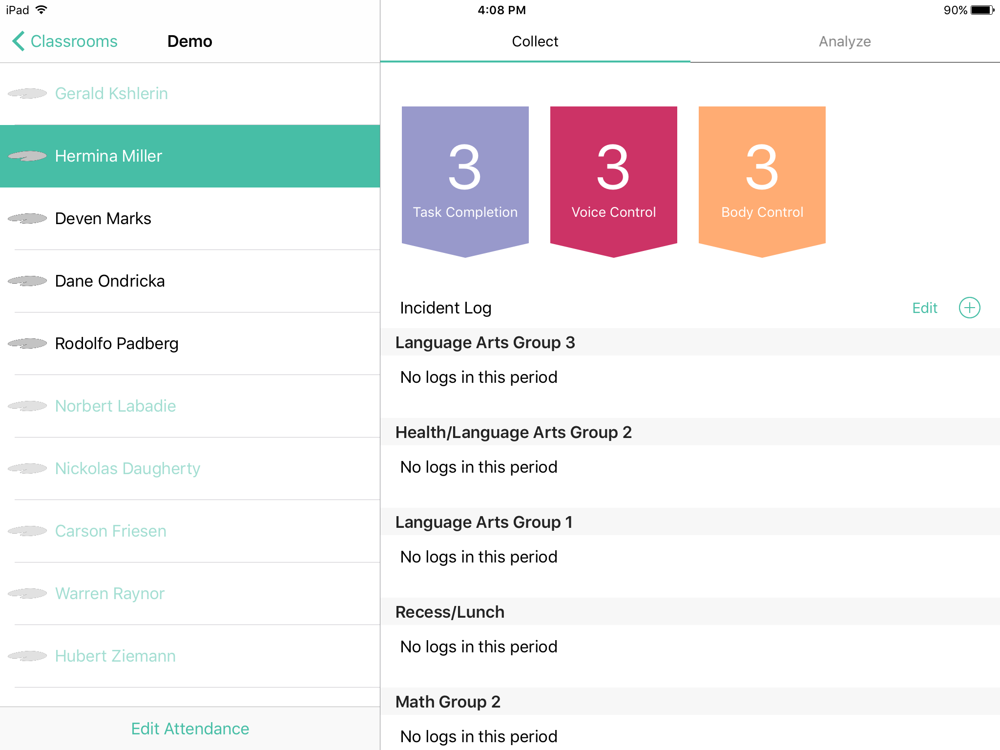
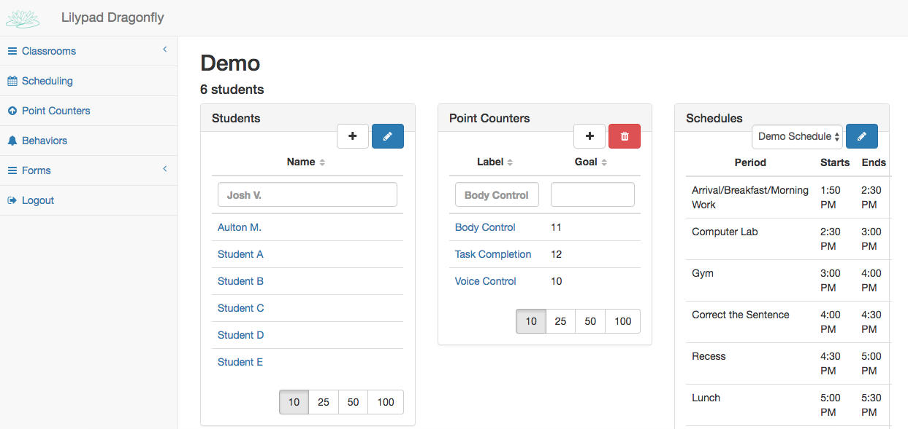
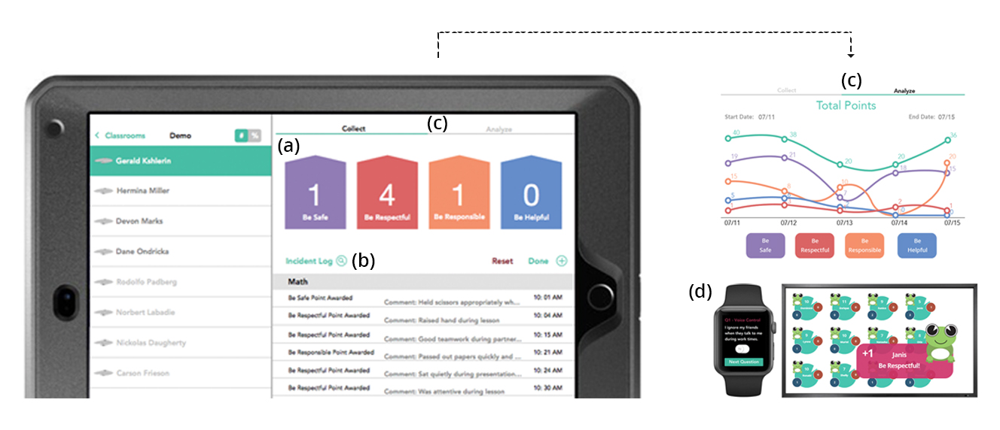

Home-School Collaboration in Support of Behavioral Intervention
Behavioral health services are critical for some children in support- ing their development and preventing adverse outcomes such as juvenile delinquency, school dropout, or substance use. Schools play an important role in identifying problem behavior and provid- ing appropriate intervention, and these e orts are most e ective when executed in collaboration with parents at home. However, home-school collaboration is di cult to achieve. In this work, we in- vestigated lack of information sharing as a barrier to collaboration, using observation, contextual inquiry, and interviews. We found that policies, processes, and tools for documenting behaviors in schools are implemented without consideration toward exchanging information with parents. As a result, when e ective two-way in- formation sharing is lacking, this hinders collaboration and erodes trust. Combining our empirical ndings with evidence-based strate- gies for parent involvement, we discuss design opportunities for promoting collaboration toward positive behavioral outcomes for children.
Improving Information Sharing and Interpretation Among Care Teams
We have developed a system to support collaborative reflection through a network of iPads used by members of a collocated team. We named this system Lilypad to convey the notion of independent points of interaction with data that also belong to an interconnected ecosystem for data management. In other words, a practitioner is aware that while she uses her Lilypad (or iPad) to record and reflect on her data, she also has the ability at her fingertips to connect with other practitioners to corroborate interpretations of that data and initiate discussion. Team members’ Lilypads are connected, and help them to be more connected for ad hoc collaboration.
 Co-Designing a Classroom Display to Support Behavior Management Plans
The paradigm of ubiquitous computing has the potential to enhance classroom behavior management. In this work, we used an action research approach to examine the use of a tablet-based behavioral data collection system by school practitioners, and co-design an interface for displaying the behavioral data to their students. We present a wall- mounted display prototype and discuss its potential for supplementing existing classroom behavior management practices. We found that wall-mounted displays could help school practitioners to provide a wider range of behavioral reinforces and deliver specific and immediate feedback to students.
The Lilypad System: A Data Collection Tool to Support the Care of Individuals with Chronic Conditions
Providing care for chronic conditions involves complex coor- dination. Integrated care is required, involving collaboration and synchronization among di erent kinds of care providers, such as physicians, psychologists, and paraprofessionals. The challenges of integrated care require innovation in health information technologies (HIT). In this demo, we present the Lilypad system, a novel HIT designed to support behavioral data management through a data collection application, a web admin panel, and care receiver modules.
Designing Gamification Technology for and with Students with Behavioral Disorders
Ubiquitous computing has previously demonstrated its abil- ity to streamline the processes of data collection and analysis for practitioners. However, little has been said about design- ing technology where students with behavioral disorders are the primary users. In this position paper, we use previous research to identify the need for students with behavioral dis- orders to be more involved with their data and the potential positive outcomes that could arise with their involvement. We present our rst iteration of a human-centered design process for creating Tadpole, an interactive digital media experience designed for students with behavioral disorders. This platform enables students and their guardians to in- teract with and monitor their behavioral progress in the classroom through data driven incentives in the form of in- teractive visuals and avatar features. As a second iteration design, we present our research proposal to involve students with behavioral disorders in the design process. We reflect on the challenges we face in designing with this population.
Designing Health Information Technologies to Support Integrated Care
Providing care for chronic conditions involves complex coordination. Integrated care is required, involving collaboration and synchronization among different kinds of care providers such as physicians, psychologists, and paraprofessionals. Integrated care also involves long-term treatment over months or years, resulting in communication challenges that can diminish the quality of provided care. The challenges of integrated care, therefore require innovation in health information technologies (HIT). In this paper, we provide empirical evidence from fieldwork we performed in an organization providing intensive behavioral and mental health services for children. Our fieldwork in this context provides an understanding of unique information needs for integrated care. We present design principles for HIT, which we have applied in designing a novel HIT aimed at behavioral data management, and validated through a long-term deployment study. We discuss the potential of these design principles for developing HIT to support the unique information needs of integrated care.
Communication and Information Sharing in Educational Environments: Home to school communication in special education
Communication between stakeholders in special education is imperative to the success and well-being of the students involved. This thesis investigates the communication between parents and teachers of children in special education. Research focused on communication mediums, the type of information being shared, how distribution of data can be improved, and how the information gathered in Sweden compares to the data collected in the United States. The study was achieved by conducting interviews in Sweden and the United States with parents and teachers having ties to special education, then completing a comparative analysis with the interview data from the United States. A literature review was conducted and resulted in the use of the theory of Transactive Knowledge Systems and the framework of Collaborative Reflection. The theory was used to analyze and support the findings. Analysis of interviews revealed electronic delivery of information is preferred among teachers and parents, providing both academic and behavioral information. In-person communication was found to be an important aspect of communication between parents and teachers that can never be replaced with other means. In Sweden, the type of information delivered and its frequency are very subjective, following a communication by need motto. Swedish parents are satisfied with communication rates and topics, seeing no need for improvements. This contrasts sharply with views of parents in America, who want as much information as possible, deciding for themselves how much of it they need.